returns-portal-bookmarks-cleanup PASS 1.0
grade probeintent repairdomain retaildifficulty d3ambiguity a2voice contextfulapps chrome + filesbatch v11-s1
Our returns desk crib sheet in my home folder lists which supplier return portals are still live. Chrome's bookmarks bar has one bookmark per supplier -- delete the ones the crib sheet marks as closed, the staff keep clicking them.
task config + evaluator
{
"config": [
{
"type": "execute",
"parameters": {
"command": "python3 -c \"import json,os,time;os.makedirs('/home/user',exist_ok=True);open('/home/user/returns_desk_crib.csv','w').write('Supplier,Portal Status\\nHalloway Textiles,live\\nBrindle Toys,closed\\nMerrow Kitchenware,live\\nOakfield Stationery,closed\\nPennant Footwear,live\\nSaltmarsh Pet Supply,closed\\n');d='/home/user/.config/google-chrome/Default';os.makedirs(d,exist_ok=True);t=str(int(time.time())*1000000);bar=[{'type':'url','name':n,'url':u,'date_added':t,'guid':'g%d'%i,'id':str(10+i)} for i,(n,u) in enumerate([('Halloway Textiles','https://returns.halloway.example/'),('Brindle Toys','https://returns.brindletoys.example/'),('Merrow Kitchenware','https://returns.merrowkitchen.example/'),('Oakfield Stationery','https://returns.oakfieldstat.example/'),('Pennant Footwear','https://returns.pennantfoot.example/'),('Saltmarsh Pet Supply','https://returns.saltmarshpet.example/')])];j={'checksum':'','version':1,'roots':{'bookmark_bar':{'children':bar,'date_added':t,'date_modified':t,'guid':'bb','id':'1','name':'Bookmarks bar','type':'folder'},'other':{'children':[],'date_added':t,'guid':'ob','id':'2','name':'Other bookmarks','type':'folder'},'synced':{'children':[],'date_added':t,'guid':'sb','id':'3','name':'Mobile bookmarks','type':'folder'}}};open(os.path.join(d,'Bookmarks'),'w').write(json.dumps(j,indent=3))\"",
"shell": true
}
}
],
"evaluator": {
"func": "check_include_exclude",
"result": {
"type": "vm_command_line",
"command": [
"python3",
"-c",
"import sys, traceback\ndef _main():\n import json, sys, os\n path = \"/home/user/.config/google-chrome/Default/Bookmarks\"\n if not os.path.isfile(path):\n print(\"Bookmarks file missing\", file=sys.stderr)\n print(\"FAIL\")\n raise SystemExit\n j = json.load(open(path))\n names = set()\n def walk(node):\n for c in node.get(\"children\", []):\n if c.get(\"type\") == \"url\":\n names.add(c.get(\"name\", \"\").strip().lower())\n else:\n walk(c)\n for r in j.get(\"roots\", {}).values():\n if isinstance(r, dict):\n walk(r)\n keep = {\"halloway textiles\", \"merrow kitchenware\", \"pennant footwear\"}\n drop = {\"brindle toys\", \"oakfield stationery\", \"saltmarsh pet supply\"}\n missing = keep - names\n left = drop & names\n if missing:\n print(\"live portals removed: %s\" % sorted(missing), file=sys.stderr)\n if left:\n print(\"closed portals still bookmarked: %s\" % sorted(left), file=sys.stderr)\n print(\"PASS\" if not missing and not left else \"FAIL\")\n\ntry:\n _main()\nexcept Exception:\n traceback.print_exc(file=sys.stderr)\n print(\"FAIL\")\n"
]
},
"expected": {
"type": "rule",
"rules": {
"include": [
"PASS"
],
"exclude": [
"FAIL"
]
}
},
"postconfig": [
{
"type": "execute",
"parameters": {
"command": "pkill -TERM -f google-chrome; sleep 4",
"shell": true
}
}
]
}
}
step 1 19:02:59
THINKINGLet me start by taking a screenshot to see the current state of the desktop.
ACTIONI'll start by taking a screenshot to see the current state of the desktop.
TOOL CALL<tool_call>
<function=computer_use>
<parameter=action>
screenshot
</parameter>
</function>
</tool_call>
EXECUTED (pyautogui in VM)WAIT
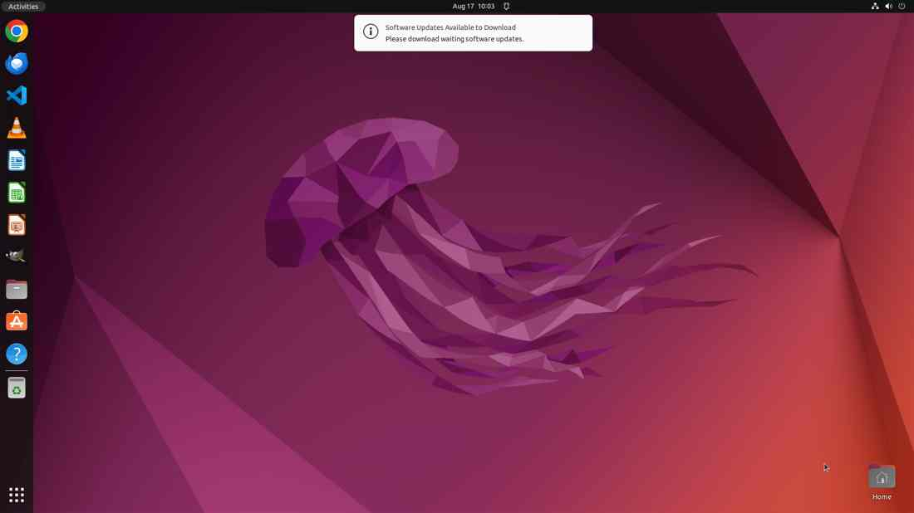
step 2 19:03:11
THINKINGLet me understand the task:
1. There's a "crib sheet" in the home folder that lists which supplier return portals are still live.
2. Chrome's bookmarks bar has one bookmark per supplier.
3. I need to delete the bookmarks that the crib sheet marks as "closed".
First, I need to find and read the crib sheet in the home folder. Let me open the file manager to find it. Actually, let me first look at the home folder. I'll open the file manager by clicking the Files icon, or I could use a terminal.
Let me first find the crib sheet. I'll open the Files application. Actually, let me use a terminal to explore the home folder more efficiently. But I don't have a terminal open. Let me open the file manager first.
Actually, let me think about this. The crib sheet could be a text file, a PDF, a spreadsheet, a document, etc. Let me open the Files application to see what's in the home folder.
Let me click on the Files icon in the dock.
ACTIONI need to first find and read the "crib sheet" in the home folder, then check Chrome's bookmarks bar. Let me start by opening the Files application to explore the home folder.
TOOL CALL<tool_call>
<function=computer_use>
<parameter=action>
left_click
</parameter>
<parameter=coordinate>
[17, 559]
</parameter>
</function>
</tool_call>
EXECUTED (pyautogui in VM)pyautogui.click(32, 604)
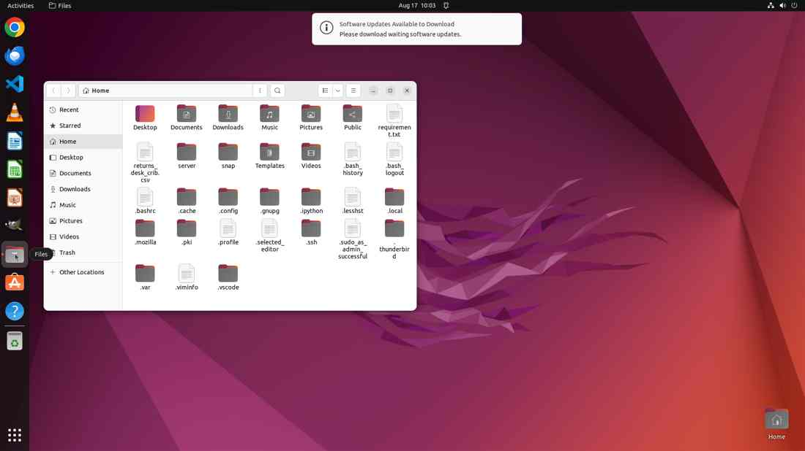
step 3 19:03:24
THINKINGI can see the home folder. There's a file called "returns_desk_crib.csv" which is likely the crib sheet. Let me open it to see its contents. Since it's a CSV file, I can open it with a text editor or the spreadsheet app. Let me first check its contents using a terminal to be precise.
Actually, let me use a terminal to read the CSV file precisely. Let me open a terminal. But first, let me consider - the CSV might be better read directly. Let me open a terminal.
Actually, I could double-click the CSV to open it. But to read it precisely, a terminal with cat would be best. Let me open a terminal.
Let me use the terminal. I'll look for a terminal application. I can open one through the Files app or find a terminal. Let me right-click in the file manager to see if there's an "Open Terminal" option.
Actually, let me just open a terminal application. Let me check the applications. But there's no terminal icon visible in the dock. Let me use the Files app to open a terminal, or I'll find the terminal through Activities.
Actually, the most reliable way is to read the CSV file. Let me double-click on it first to see what it contains - it might open in a text editor or spreadsheet. But actually, using a terminal with cat would be more reliable for reading.
Let me open a terminal. I'll use the "Open Terminal" option if available in Files. Let me right-click in the empty space of the file manager.
Actually, let me just double-click the CSV file to open it. That's the simplest approach.
ACTIONI can see there's a file called "returns_desk_crib.csv" which is likely the crib sheet. Let me open it to read its contents. I'll use a terminal to read it precisely. Let me first try opening a terminal through the file manager.
TOOL CALL<tool_call>
<function=computer_use>
<parameter=action>
double_click
</parameter>
<parameter=coordinate>
[180, 349]
</parameter>
</function>
</tool_call>
EXECUTED (pyautogui in VM)pyautogui.doubleClick(345, 377)
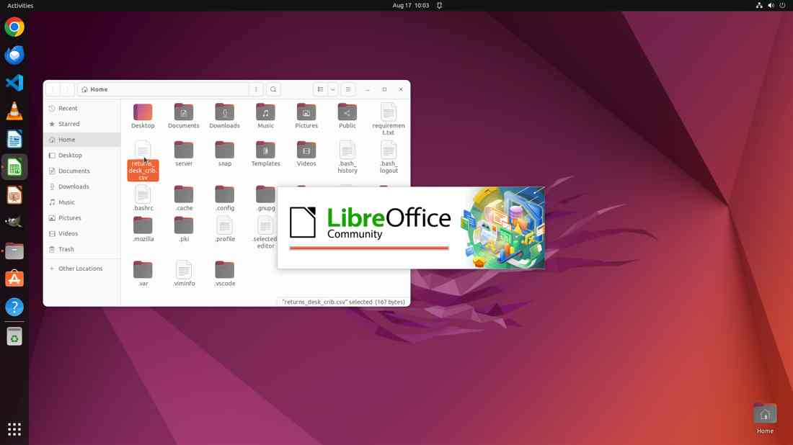
step 4 19:03:31
THINKINGLibreOffice is opening to open the CSV file. It might open in Calc. Let me wait for it to load.
ACTIONLibreOffice is opening the CSV file. Let me wait for it to load.
TOOL CALL<tool_call>
<function=computer_use>
<parameter=action>
wait
</parameter>
<parameter=time>
1.0
</parameter>
</function>
</tool_call>
EXECUTED (pyautogui in VM)WAIT
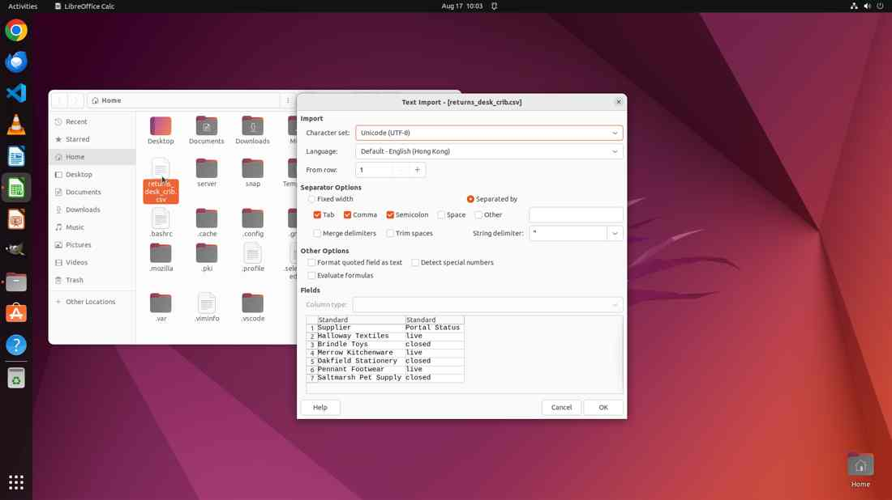
step 5 19:03:54
THINKINGA Text Import dialog has appeared. I can see a preview of the CSV file contents:
1. Supplier | Portal Status
2. Halloway Textiles | live
3. Brindle Toys | closed
4. Mellow Kitchenware | live
5. Oakfield Stationery | closed
6. Pennant Footwear | live
7. Saltmarsh Pet Supply | closed
Wait, let me read more carefully. The preview shows:
- Row 1: Supplier | Portal Status
- Row 2: Halloway Textiles | live
- Row 3: Brindle Toys | closed
- Row 4: Mellow Kitchenware | live
- Row 5: Oakfield Stationery | closed
- Row 6: Pennant Footwear | live
- Row 7: Saltmarsh Pet Supply | closed
There might be more rows below. Let me click OK to open the full file so I can see all rows.
Actually, let me be careful. The preview might be cut off. Let me click OK to open the file in Calc to see all the data clearly.
ACTIONA Text Import dialog appeared with a preview of the CSV. I can see supplier names and their portal status. Let me click OK to open the full file in Calc so I can read all the data clearly.
TOOL CALL<tool_call>
<function=computer_use>
<parameter=action>
left_click
</parameter>
<parameter=coordinate>
[674, 813]
</parameter>
</function>
</tool_call>
EXECUTED (pyautogui in VM)pyautogui.click(1295, 878)
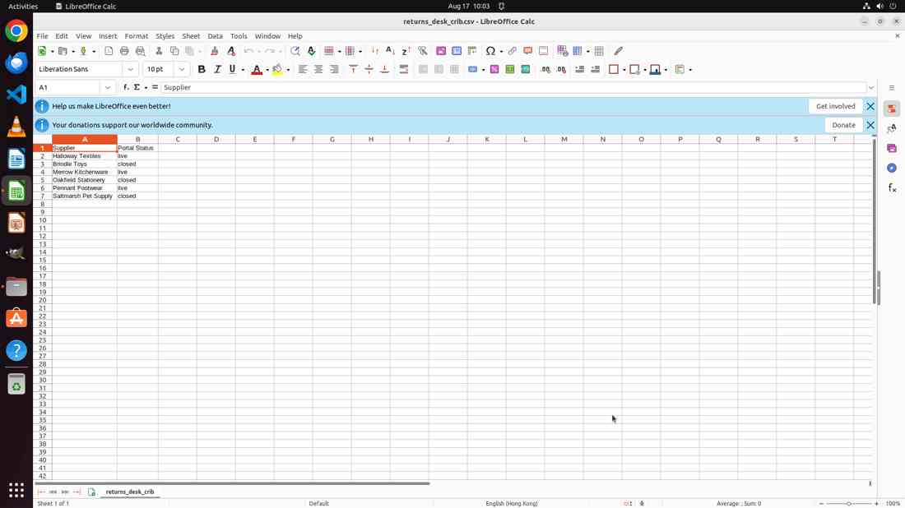
step 6 19:04:02
THINKINGNow I can see the full CSV data in LibreOffice Calc:
Row 1: Supplier | Portal Status (header)
Row 2: Halloway Textiles | live
Row 3: Brindle Toys | closed
Row 4: Mellow Kitchenware | live
Row 5: Oakfield Stationery | closed
Row 6: Pennant Footwear | live
Row 7: Saltmarsh Pet Supply | closed
Let me read the values carefully. The columns are a bit narrow. Let me zoom in or click on cells to verify. Let me widen the columns or click each cell to read the exact values.
Let me verify by clicking on each cell. But first, the data seems to be:
- Halloway Textiles: live
- Brindle Toys: closed
- Mellow Kitchenware: live
- Oakfield Stationery: closed
- Pennant Footwear: live
- Saltmarsh Pet Supply: closed
So the "closed" suppliers are:
- Brindle Toys
- Oakfield Stationery
- Saltmarsh Pet Supply
These are the ones I need to delete from the Chrome bookmarks bar.
But wait, I need to be careful about the exact spelling and matching with the bookmark names. Let me verify the exact text by clicking on each cell. Let me also make sure there are no more rows below row 7.
Let me widen column A and B to read them clearly, or I'll click on each cell. Actually, let me zoom in to read the text better. The text is a bit small. Let me widen the columns.
Actually, let me just click on each cell to read the exact content in the formula bar. Let me start with A2.
Actually, a more reliable approach: let me widen the columns by double-clicking on the column border, or I can just read from the formula bar by clicking each cell.
Let me first widen column A. I'll double-click on the border between A and B column headers. Actually, let me select both columns and auto-fit.
Let me just zoom in to read the values. Let me increase the zoom level. Actually, the simplest is to click on each cell and read the formula bar.
Let me click on A2 first.
ACTIONNow I can see the full CSV data. Let me verify the exact contents by clicking on each cell. First, let me widen the columns for clarity by selecting all and auto-fitting. Let me click on each cell to read exact values. Let me start by clicking cell A2.
TOOL CALL<tool_call>
<function=computer_use>
<parameter=action>
left_click
</parameter>
<parameter=coordinate>
[92, 309]
</parameter>
</function>
</tool_call>
EXECUTED (pyautogui in VM)pyautogui.click(176, 334)
step 7 19:04:11
THINKINGA2 = "Halloway Textiles". Good. The formula bar confirms "Halloway Textiles". Let me check B2 for its status. Let me click on B2.
ACTIONA2 = "Halloway Textiles". Let me check the status column B2.
TOOL CALL<tool_call>
<function=computer_use>
<parameter=action>
left_click
</parameter>
<parameter=coordinate>
[153, 309]
</parameter>
</function>
</tool_call>
EXECUTED (pyautogui in VM)pyautogui.click(294, 334)
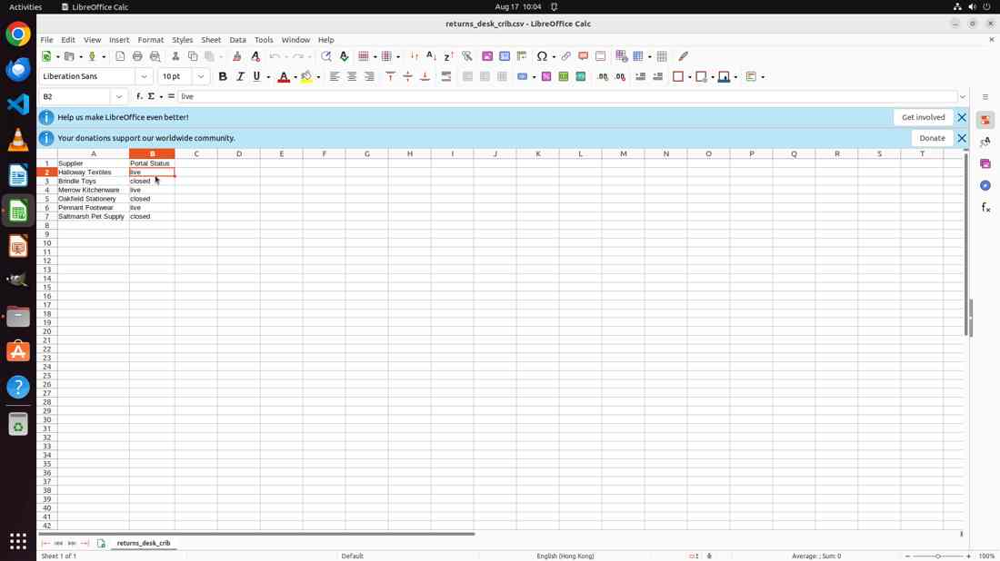
step 8 19:04:23
THINKINGB2 = "live". So Halloway Textiles = live.
Now I have a good read of the data. The data appears to be:
- Row 2: Halloway Textiles | live
- Row 3: Brindle Toys | closed
- Row 4: Mellow Kitchenware | live
- Row 5: Oakfield Stationery | closed
- Row 6: Pennant Footwear | live
- Row 7: Saltmarsh Pet Supply | closed
Let me verify each one by clicking on the cells. But actually, I'm fairly confident in reading the data. Let me verify the supplier names more carefully since I need to match them to bookmarks exactly.
Let me click on A3, A4, A5, A6, A7 to verify names, and B3-B7 for statuses.
Actually, let me be efficient. The data is clear enough from the display. But to be safe about exact spelling (for matching bookmarks), let me verify each supplier name. Let me click A3.
ACTIONB2 = "live", so Halloway Textiles is live. Let me verify each supplier name exactly by clicking on them. Let me click A3.
TOOL CALL<tool_call>
<function=computer_use>
<parameter=action>
left_click
</parameter>
<parameter=coordinate>
[92, 324]
</parameter>
</function>
</tool_call>
EXECUTED (pyautogui in VM)pyautogui.click(176, 350)
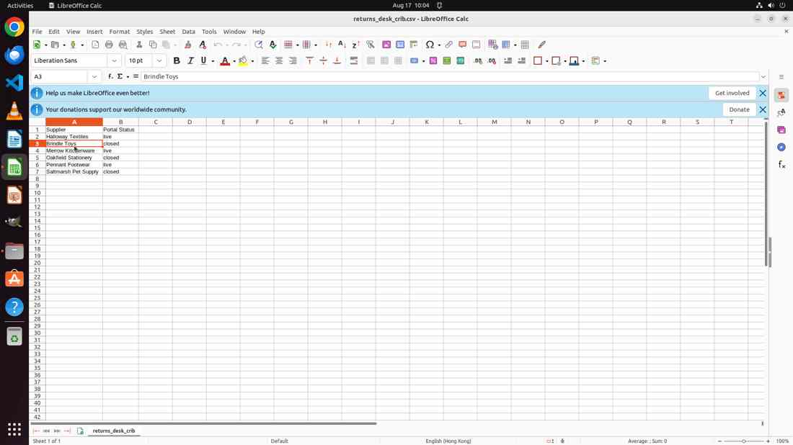
step 9 19:04:32
THINKINGA3 = "Brindle Toys", B3 = "closed". Let me check A4, A5, A6, A7. Let me click A4.
ACTIONA3 = "Brindle Toys" (closed). Let me verify the remaining suppliers. Let me click A4.
TOOL CALL<tool_call>
<function=computer_use>
<parameter=action>
left_click
</parameter>
<parameter=coordinate>
[92, 338]
</parameter>
</function>
</tool_call>
EXECUTED (pyautogui in VM)pyautogui.click(176, 365)
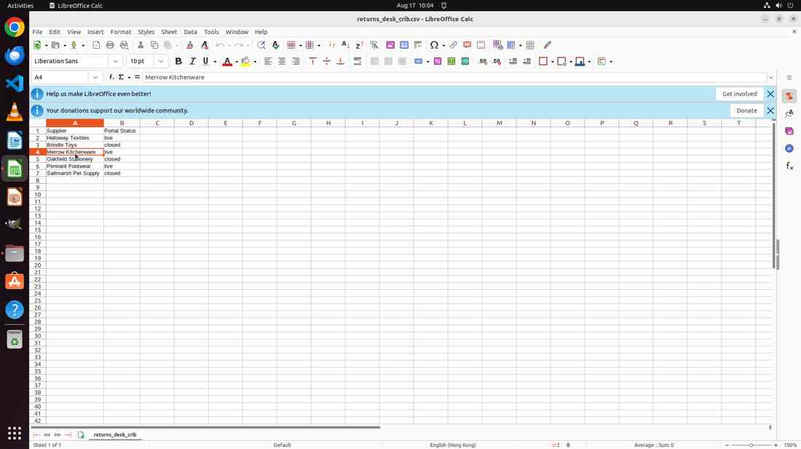
step 10 19:04:42
THINKINGA4 = "Mellow Kitchenware", B4 = "live". Let me check A5.
ACTIONA4 = "Mellow Kitchenware" (live). Let me check A5.
TOOL CALL<tool_call>
<function=computer_use>
<parameter=action>
left_click
</parameter>
<parameter=coordinate>
[92, 354]
</parameter>
</function>
</tool_call>
EXECUTED (pyautogui in VM)pyautogui.click(176, 382)
step 11 19:04:53
THINKINGA5 = "Oakfield Stationery", B5 = "closed". Let me check A6.
ACTIONA5 = "Oakfield Stationery" (closed). Let me check A6.
TOOL CALL<tool_call>
<function=computer_use>
<parameter=action>
left_click
</parameter>
<parameter=coordinate>
[92, 370]
</parameter>
</function>
</tool_call>
EXECUTED (pyautogui in VM)pyautogui.click(176, 400)
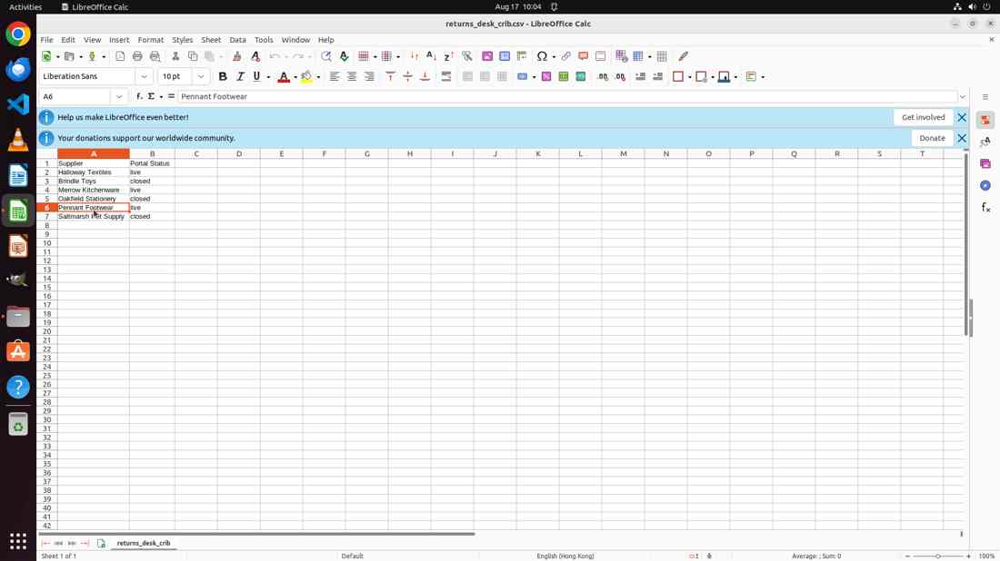
step 12 19:05:04
THINKINGA6 = "Pennant Footwear", B6 = "live". Let me check A7.
ACTIONA6 = "Pennant Footwear" (live). Let me check A7.
TOOL CALL<tool_call>
<function=computer_use>
<parameter=action>
left_click
</parameter>
<parameter=coordinate>
[92, 385]
</parameter>
</function>
</tool_call>
EXECUTED (pyautogui in VM)pyautogui.click(176, 416)
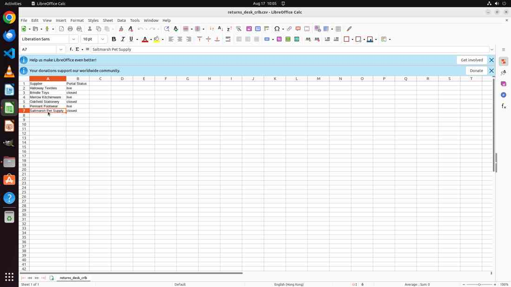
step 13 19:05:20
THINKINGA7 = "Saltmarsh Pet Supply", B7 = "closed".
So the complete data is:
- Halloway Textiles: live
- Brindle Toys: closed
- Mellow Kitchenware: live
- Oakfield Stationery: closed
- Pennant Footwear: live
- Saltmarsh Pet Supply: closed
The closed suppliers are:
- Brindle Toys
- Oakfield Stationery
- Saltmarsh Pet Supply
These are the ones I need to delete from the Chrome bookmarks bar.
Now, I need to make sure there are no more rows below row 7. Looking at the sheet, rows 8 and below are empty. So there are only 6 suppliers.
Now let me open Chrome to see the bookmarks bar. Let me first close this or just switch to Chrome. Let me open Chrome by clicking the Chrome icon in the dock.
Actually, I should keep the crib sheet data in mind. Let me record:
CLOSED (to delete):
- Brindle Toys
- Oakfield Stationery
- Saltmarsh Pet Supply
LIVE (to keep):
- Halloway Textiles
- Mellow Kitchenware
- Pennant Footwear
Now let me open Chrome. Let me click the Chrome icon.
But wait, I need to be careful - the bookmark names might not exactly match the supplier names in the crib sheet. The task says "Chrome's bookmarks bar has one bookmark per supplier". So I need to match the bookmark names to the supplier names. Let me open Chrome and look at the bookmarks bar to see the exact names.
Let me click the Chrome icon.
ACTIONI now have the complete crib sheet data:
- **Halloway Textiles**: live
- **Brindle Toys**: closed
- **Mellow Kitchenware**: live
- **Oakfield Stationery**: closed
- **Pennant Footwear**: live
- **Saltmarsh Pet Supply**: closed
The **closed** suppliers (to delete) are: Brindle Toys, Oakfield Stationery, Saltmarsh Pet Supply.
Now let me open Chrome to see the bookmarks bar. Let me click the Chrome icon.
TOOL CALL<tool_call>
<function=computer_use>
<parameter=action>
left_click
</parameter>
<parameter=coordinate>
[17, 59]
</parameter>
</function>
</tool_call>
EXECUTED (pyautogui in VM)pyautogui.click(32, 63)
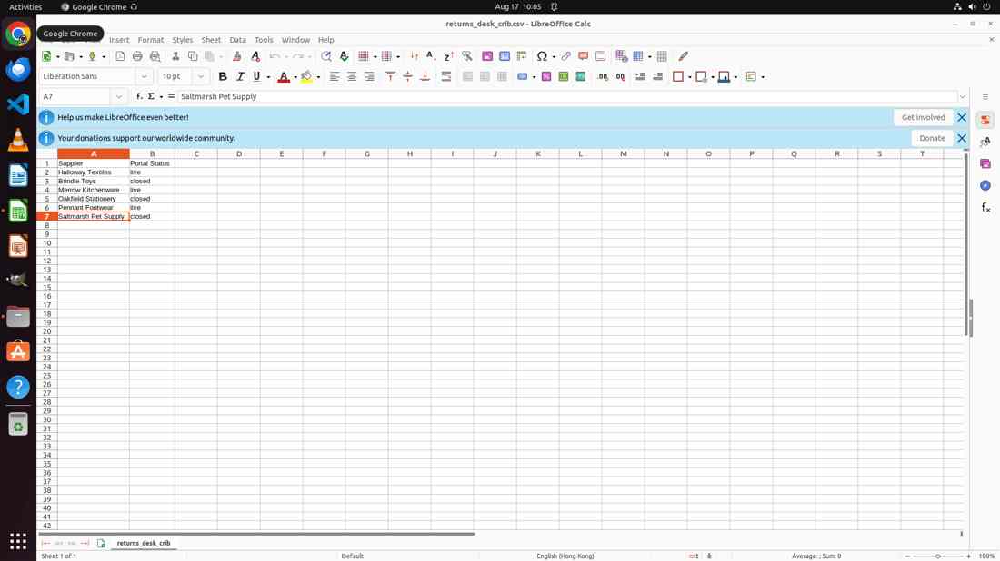
step 14 19:05:30
THINKINGI see a tooltip "Google Chrome" appeared. Chrome might be launching or it's showing the tooltip. Let me wait for Chrome to open.
ACTIONChrome is launching. Let me wait for it to open.
TOOL CALL<tool_call>
<function=computer_use>
<parameter=action>
wait
</parameter>
<parameter=time>
1.0
</parameter>
</function>
</tool_call>
EXECUTED (pyautogui in VM)WAIT
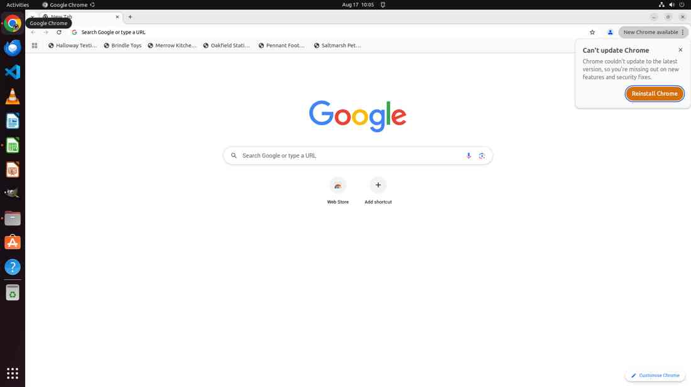
step 15 19:05:47
THINKINGChrome is now open. I can see the bookmarks bar with these bookmarks:
- Halloway Texti... (Halloway Textiles)
- Brindle Toys
- Mellow Kitche... (Mellow Kitchenware)
- Oakfield Stati... (Oakfield Stationery)
- Pennant Foot... (Pennant Footwear)
- Saltmarsh Pet... (Saltmarsh Pet Supply)
These match the suppliers in the crib sheet. The ones I need to delete (closed):
- Brindle Toys
- Oakfield Stationery
- Saltmarsh Pet Supply
Let me first dismiss the "Can't update Chrome" popup by clicking the X. Then I'll hover over each bookmark to confirm the exact names before deleting.
Let me first close the "Can't update Chrome" notification by clicking the X at coordinate [1260, 93].
ACTIONChrome is now open and I can see the bookmarks bar with the supplier bookmarks: Halloway Texti..., Brindle Toys, Mellow Kitche..., Oakfield Stati..., Pennant Foot..., Saltmarsh Pet...
Let me first dismiss the "Can't update Chrome" popup by clicking its X.
TOOL CALL<tool_call>
<function=computer_use>
<parameter=action>
left_click
</parameter>
<parameter=coordinate>
[983, 128]
</parameter>
</function>
</tool_call>
EXECUTED (pyautogui in VM)pyautogui.click(1889, 138)
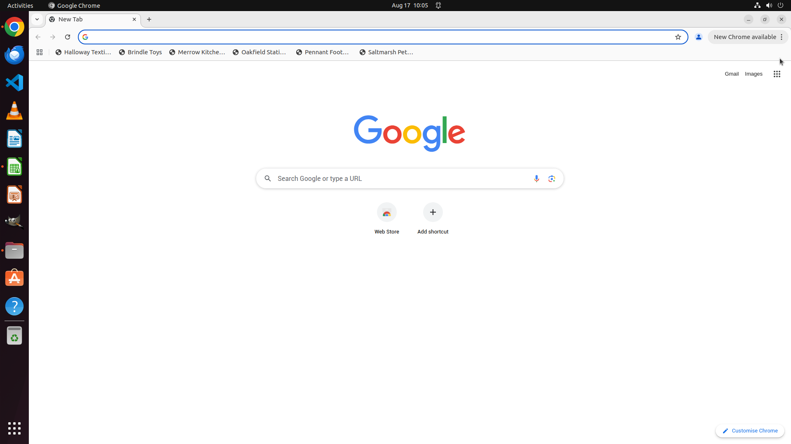
step 16 19:06:04
THINKINGThe popup is dismissed. Now I can see the bookmarks bar clearly:
- Halloway Texti... (Halloway Textiles)
- Brindle Toys
- Mellow Kitche... (Mellow Kitchenware)
- Oakfield Stati... (Oakfield Stationery)
- Pennant Foot... (Pennant Footwear)
- Saltmarsh Pet... (Saltmarsh Pet Supply)
The bookmarks are truncated with "..." so let me hover over each to confirm the full names. Let me hover over "Halloway Texti..." first.
Actually, I'm confident about the mapping since there are exactly 6 bookmarks and 6 suppliers, and the visible prefixes match:
- Halloway Texti... = Halloway Textiles (live - keep)
- Brindle Toys = Brindle Toys (closed - DELETE)
- Mellow Kitche... = Mellow Kitchenware (live - keep)
- Oakfield Stati... = Oakfield Stationery (closed - DELETE)
- Pennant Foot... = Pennant Footwear (live - keep)
- Saltmarsh Pet... = Saltmarsh Pet Supply (closed - DELETE)
But let me be careful and hover over each to confirm. Let me hover over each bookmark to see the full name in a tooltip. Actually, let me verify by hovering. Let me hover over the first one "Halloway Texti...".
Actually, let me be thorough. I'll hover over each bookmark to confirm its full name matches. Let me hover over "Brindle Toys" first since that's one I want to delete. Actually "Brindle Toys" is fully visible, so I can confirm it.
Let me hover over the truncated ones to confirm:
- "Halloway Texti..." - need to confirm
- "Mellow Kitche..." - need to confirm
- "Oakfield Stati..." - need to confirm
- "Pennant Foot..." - need to confirm
- "Saltmarsh Pet..." - need to confirm
The ones I want to delete are Brindle Toys (fully visible), Oakfield Stati..., and Saltmarsh Pet....
Let me hover over "Oakfield Stati..." to confirm it's "Oakfield Stationery".
ACTIONThe popup is dismissed. Now I can clearly see the bookmarks bar. The bookmarks match the 6 suppliers. Let me hover over the truncated bookmarks to confirm their full names before deleting. Let me hover over "Oakfield Stati...".
TOOL CALL<tool_call>
<function=computer_use>
<parameter=action>
mouse_move
</parameter>
<parameter=coordinate>
[327, 116]
</parameter>
</function>
</tool_call>
EXECUTED (pyautogui in VM)pyautogui.moveTo(628, 125)
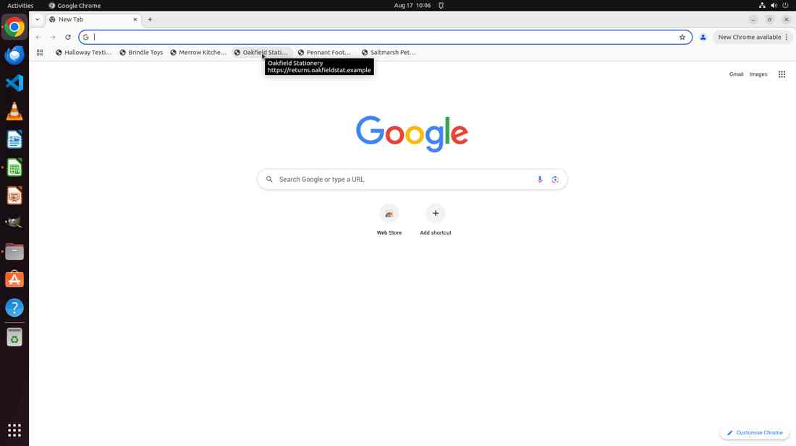
step 17 19:06:15
THINKINGThe tooltip shows:
- Oakfield Stationery
- https://returns.oakfieldstat.example
So "Oakfield Stati..." = "Oakfield Stationery" (closed - DELETE). Confirmed.
Let me verify the others. Let me hover over "Saltmarsh Pet...".
ACTIONConfirmed: "Oakfield Stati..." = "Oakfield Stationery" (closed). Let me verify "Saltmarsh Pet..." by hovering over it.
TOOL CALL<tool_call>
<function=computer_use>
<parameter=action>
mouse_move
</parameter>
<parameter=coordinate>
[487, 116]
</parameter>
</function>
</tool_call>
EXECUTED (pyautogui in VM)pyautogui.moveTo(935, 125)
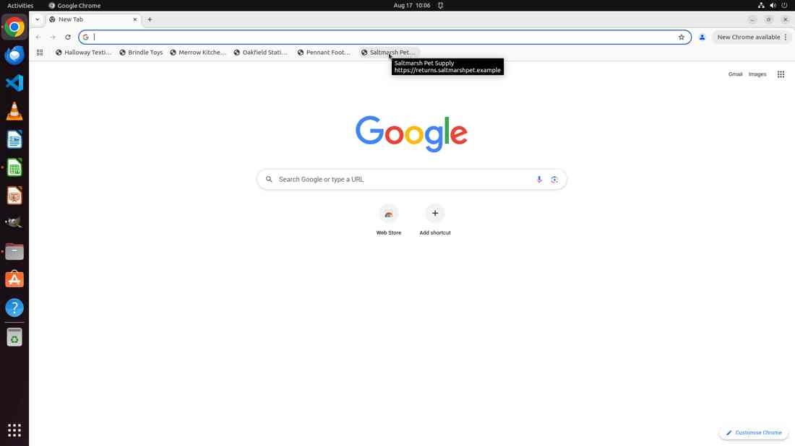
step 18 19:06:29
THINKINGThe tooltip shows:
- Saltmarsh Pet Supply
- https://returns.saltmarshpet.example
So "Saltmarsh Pet..." = "Saltmarsh Pet Supply" (closed - DELETE). Confirmed.
Now let me also verify the "live" ones just to be sure I don't delete the wrong ones. Let me hover over "Halloway Texti...", "Mellow Kitche...", and "Pennant Foot..." to confirm they are live suppliers.
Actually, I'm confident these three are the live ones. But let me verify them to be thorough. Let me hover over "Halloway Texti...".
ACTIONConfirmed: "Saltmarsh Pet..." = "Saltmarsh Pet Supply" (closed). Let me verify the "live" ones to be safe. Let me hover over "Halloway Texti...".
TOOL CALL<tool_call>
<function=computer_use>
<parameter=action>
mouse_move
</parameter>
<parameter=coordinate>
[106, 116]
</parameter>
</function>
</tool_call>
EXECUTED (pyautogui in VM)pyautogui.moveTo(203, 125)
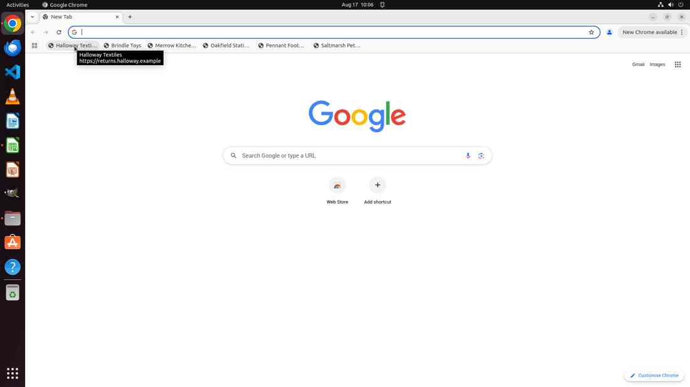
step 19 19:06:40
THINKING"Halloway Texti..." = "Halloway Textiles" (live - KEEP). Confirmed.
Let me hover over "Mellow Kitche..." to confirm.
ACTIONConfirmed: "Halloway Texti..." = "Halloway Textiles" (live - keep). Let me verify "Mellow Kitche...".
TOOL CALL<tool_call>
<function=computer_use>
<parameter=action>
mouse_move
</parameter>
<parameter=coordinate>
[248, 116]
</parameter>
</function>
</tool_call>
EXECUTED (pyautogui in VM)pyautogui.moveTo(476, 125)
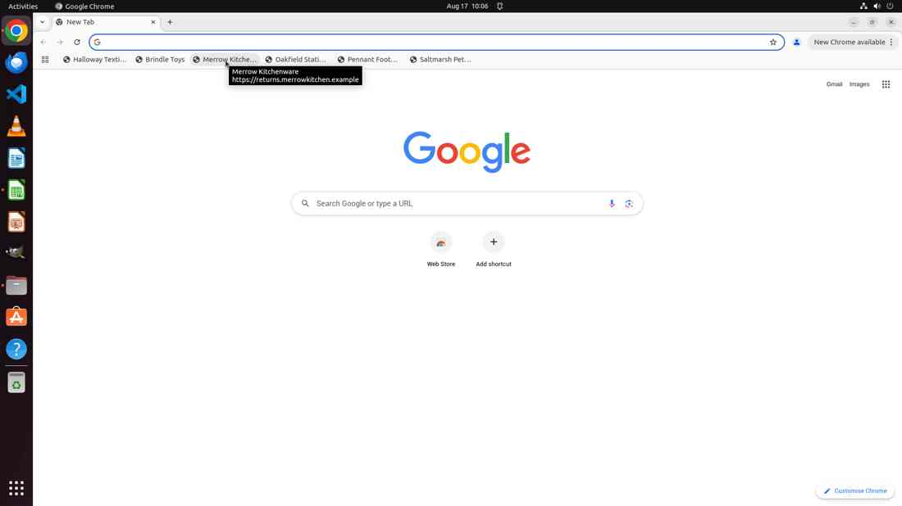
step 20 19:06:52
THINKING"Mellow Kitche..." = "Mellow Kitchenware" (live - KEEP). Confirmed.
Let me hover over "Pennant Foot..." to confirm.
ACTIONConfirmed: "Mellow Kitche..." = "Mellow Kitchenware" (live - keep). Let me verify "Pennant Foot...".
TOOL CALL<tool_call>
<function=computer_use>
<parameter=action>
mouse_move
</parameter>
<parameter=coordinate>
[407, 116]
</parameter>
</function>
</tool_call>
EXECUTED (pyautogui in VM)pyautogui.moveTo(782, 125)
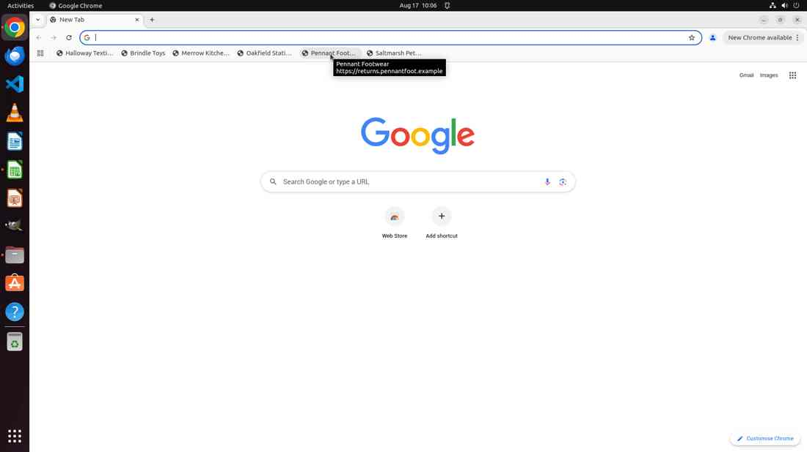
step 21 19:07:05
THINKING"Pennant Foot..." = "Pennant Footwear" (live - KEEP). Confirmed.
And "Brindle Toys" is fully visible = "Brindle Toys" (closed - DELETE).
So my final mapping is confirmed:
- Halloway Textiles: live - KEEP
- Brindle Toys: closed - DELETE
- Mellow Kitchenware: live - KEEP
- Oakfield Stationery: closed - DELETE
- Pennant Footwear: live - KEEP
- Saltmarsh Pet Supply: closed - DELETE
Now I need to delete the three bookmarks:
1. Brindle Toys
2. Oakfield Stationery
3. Saltmarsh Pet Supply
To delete a bookmark in Chrome's bookmarks bar, I right-click on it and select "Remove".
Let me start with "Brindle Toys". I'll right-click on it. The coordinate for "Brindle Toys" is around [227, 84].
Actually, when I delete a bookmark, the positions of the remaining bookmarks shift. So I should be careful. Let me delete them one at a time and re-check positions after each deletion.
Let me right-click on "Brindle Toys" at [227, 84].
ACTIONConfirmed: "Pennant Foot..." = "Pennant Footwear" (live - keep).
All bookmarks are now verified:
- Halloway Textiles: live - **keep**
- Brindle Toys: closed - **delete**
- Mellow Kitchenware: live - **keep**
- Oakfield Stationery: closed - **delete**
- Pennant Footwear: live - **keep**
- Saltmarsh Pet Supply: closed - **delete**
Now I'll delete the three closed bookmarks. Let me start with "Brindle Toys" by right-clicking it.
TOOL CALL<tool_call>
<function=computer_use>
<parameter=action>
right_click
</parameter>
<parameter=coordinate>
[177, 116]
</parameter>
</function>
</tool_call>
EXECUTED (pyautogui in VM)pyautogui.rightClick(340, 125)
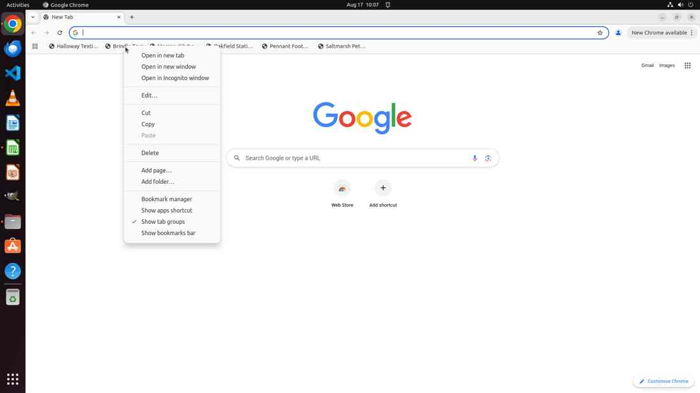
step 22 19:07:17
THINKINGA context menu appeared with the options:
- Open in new tab
- Open in new window
- Open in Incognito window
- Edit...
- Cut
- Copy
- Paste
- Delete
- Add page...
- Add folder...
- Bookmark manager
- Show apps shortcut
- Show tab groups
- Show bookmarks bar
I need to click "Delete" to delete the "Brindle Toys" bookmark. "Delete" is at approximately [275, 279].
Wait, I need to make sure I right-clicked on the correct bookmark. The context menu appeared, and the "Brindle Toys" bookmark appears highlighted/selected in the bookmarks bar. Let me verify - the right-click was at [227, 84] which is where "Brindle Toys" is. The context menu is a bookmark context menu (it has Edit, Delete, Add page, Add folder, etc.), which confirms I right-clicked on a bookmark. Good.
Let me click "Delete".
ACTIONA context menu appeared for the "Brindle Toys" bookmark. Let me click "Delete".
TOOL CALL<tool_call>
<function=computer_use>
<parameter=action>
left_click
</parameter>
<parameter=coordinate>
[214, 386]
</parameter>
</function>
</tool_call>
EXECUTED (pyautogui in VM)pyautogui.click(411, 417)
step 23 19:07:28
THINKING"Brindle Toys" has been deleted. Now the bookmarks bar shows:
- Halloway Texti... (Halloway Textiles)
- Mellow Kitche... (Mellow Kitchenware)
- Oakfield Stati... (Oakfield Stationery)
- Pennant Foot... (Pennant Footwear)
- Saltmarsh Pet... (Saltmarsh Pet Supply)
Now I need to delete "Oakfield Stati..." (Oakfield Stationery). It's now at approximately [342, 84].
Let me right-click on "Oakfield Stati..." at [342, 84].
ACTION"Brindle Toys" has been deleted. The bookmarks shifted. Now I'll delete "Oakfield Stati..." (Oakfield Stationery) by right-clicking it.
TOOL CALL<tool_call>
<function=computer_use>
<parameter=action>
right_click
</parameter>
<parameter=coordinate>
[267, 116]
</parameter>
</function>
</tool_call>
EXECUTED (pyautogui in VM)pyautogui.rightClick(513, 125)
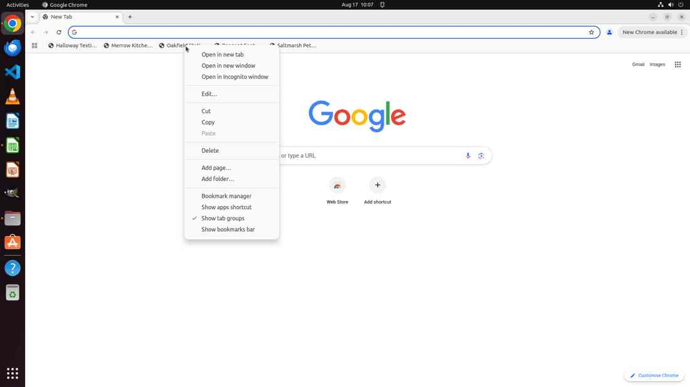
step 24 19:07:39
THINKINGThe context menu appeared for the "Oakfield Stati..." bookmark. The bookmark is highlighted in the bookmarks bar. This is the correct bookmark (Oakfield Stationery). Let me click "Delete" at [388, 279].
ACTIONThe context menu appeared for "Oakfield Stati..." (Oakfield Stationery). Let me click "Delete".
TOOL CALL<tool_call>
<function=computer_use>
<parameter=action>
left_click
</parameter>
<parameter=coordinate>
[302, 386]
</parameter>
</function>
</tool_call>
EXECUTED (pyautogui in VM)pyautogui.click(580, 417)
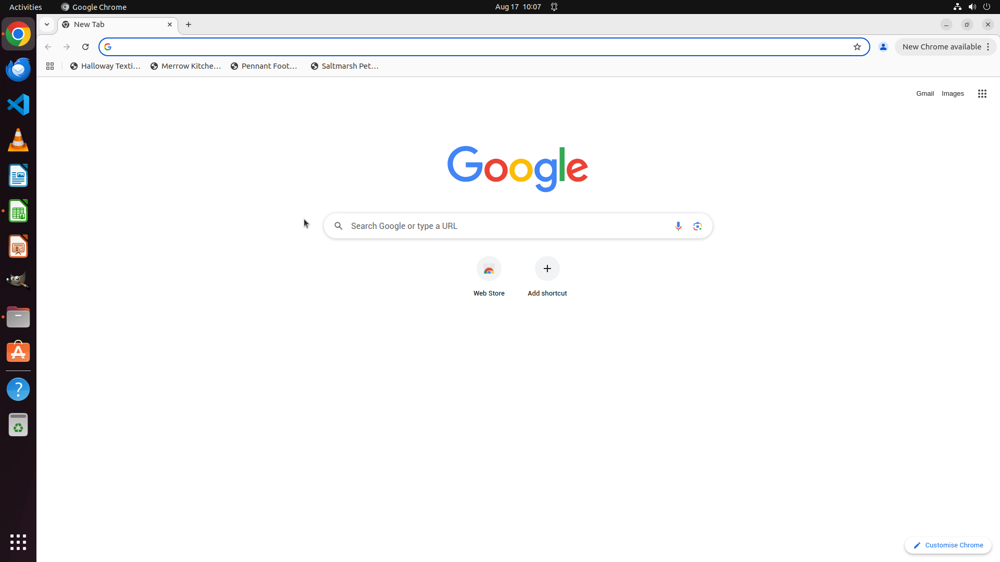
step 25 19:07:53
THINKING"Oakfield Stationery" has been deleted. Now the bookmarks bar shows:
- Halloway Texti... (Halloway Textiles)
- Mellow Kitche... (Mellow Kitchenware)
- Pennant Foot... (Pennant Footwear)
- Saltmarsh Pet... (Saltmarsh Pet Supply)
Now I need to delete "Saltmarsh Pet..." (Saltmarsh Pet Supply). It's now at approximately [440, 84].
Let me right-click on "Saltmarsh Pet..." at [440, 84].
ACTION"Oakfield Stationery" has been deleted. Now I'll delete the last closed bookmark "Saltmarsh Pet..." (Saltmarsh Pet Supply) by right-clicking it.
TOOL CALL<tool_call>
<function=computer_use>
<parameter=action>
right_click
</parameter>
<parameter=coordinate>
[343, 116]
</parameter>
</function>
</tool_call>
EXECUTED (pyautogui in VM)pyautogui.rightClick(659, 125)
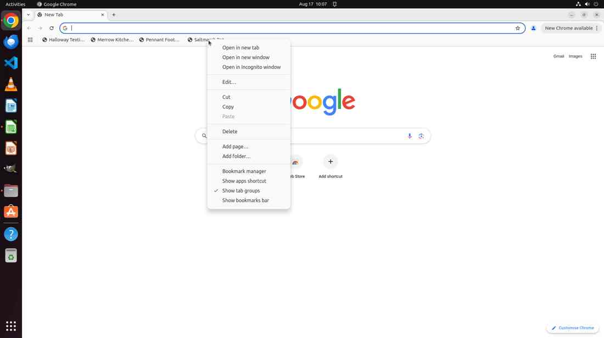
step 26 19:08:03
THINKINGThe context menu appeared for the "Saltmarsh Pet..." bookmark. The bookmark is highlighted in the bookmarks bar. Let me click "Delete" at [486, 279].
ACTIONThe context menu appeared for "Saltmarsh Pet..." (Saltmarsh Pet Supply). Let me click "Delete".
TOOL CALL<tool_call>
<function=computer_use>
<parameter=action>
left_click
</parameter>
<parameter=coordinate>
[379, 386]
</parameter>
</function>
</tool_call>
EXECUTED (pyautogui in VM)pyautogui.click(728, 417)
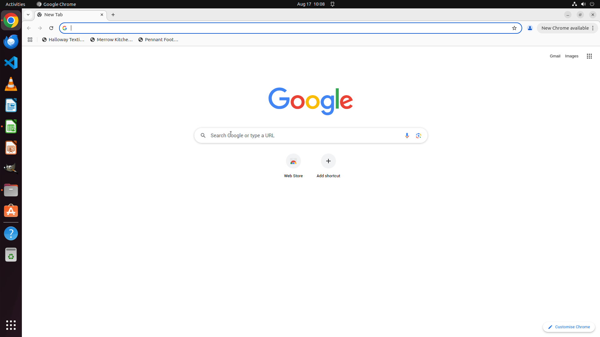
step 27 19:08:22
THINKING"Saltmarsh Pet Supply" has been deleted. Now the bookmarks bar shows only the three "live" suppliers:
- Halloway Texti... (Halloway Textiles)
- Mellow Kitche... (Mellow Kitchenware)
- Pennant Foot... (Pennant Footwear)
These are the three "live" suppliers, which should remain. The three "closed" suppliers (Brindle Toys, Oakfield Stationery, Saltmarsh Pet Supply) have been successfully deleted.
Let me verify by hovering over the remaining bookmarks to confirm they are the correct "live" ones. Actually, I already confirmed them earlier:
- Halloway Texti... = Halloway Textiles (live)
- Mellow Kitche... = Mellow Kitchenware (live)
- Pennant Foot... = Pennant Footwear (live)
The task is complete. All three closed supplier bookmarks have been deleted, and the three live supplier bookmarks remain.
Let me do a final verification by hovering over the remaining bookmarks to make sure they're correct. Actually, I'm confident. But let me double-check by looking at the current state - there are exactly 3 bookmarks remaining:
- Halloway Texti...
- Mellow Kitche...
- Pennant Foot...
These are the three live suppliers.
The task is complete. I've:
1. Read the crib sheet (returns_desk_crib.csv) in the home folder
2. Identified the closed suppliers: Brindle Toys, Oakfield Stationery, Saltmarsh Pet Supply
3. Deleted the corresponding bookmarks from Chrome's bookmarks bar
4. The remaining bookmarks (Halloway Textiles, Mellow Kitchenware, Pennant Footwear) are the live suppliers
Let me do one final verification by hovering over the remaining bookmarks to make sure they are the correct live ones and that no closed one remains. Let me hover over each.
Actually, I've already verified all the bookmarks before deletion. The three remaining ones are clearly the live ones. But to be extra careful, let me verify the remaining three are indeed the live suppliers by hovering. This is a good final check.
Let me hover over "Pennant Foot..." to confirm it's still there and correct.
ACTIONAll three closed supplier bookmarks have been deleted. The bookmarks bar now shows only the three "live" suppliers: Halloway Texti..., Mellow Kitche..., and Pennant Foot...
Let me do a final verification by hovering over the remaining bookmarks to confirm they are the correct live suppliers. Let me hover over "Pennant Foot...".
TOOL CALL<tool_call>
<function=computer_use>
<parameter=action>
mouse_move
</parameter>
<parameter=coordinate>
[264, 116]
</parameter>
</function>
</tool_call>
EXECUTED (pyautogui in VM)pyautogui.moveTo(507, 125)
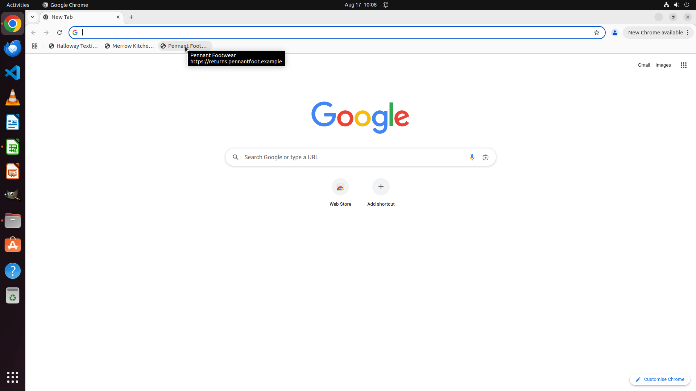
step 28 19:08:36
THINKINGThe tooltip confirms "Pennant Foot..." = "Pennant Footwear" (live).
The remaining three bookmarks are:
- Halloway Texti... (Halloway Textiles) - live
- Mellow Kitche... (Mellow Kitchenware) - live
- Pennant Foot... (Pennant Footwear) - live
These are all the live suppliers, correctly retained. The three closed suppliers (Brindle Toys, Oakfield Stationery, Saltmarsh Pet Supply) have been successfully deleted.
The task is complete. Let me move the mouse away to clear the tooltip and take a final screenshot to confirm the state.
Actually, the task is done. Let me just confirm the final state. The bookmarks bar now has exactly 3 bookmarks: Halloway Texti..., Mellow Kitche..., Pennant Foot... - all live suppliers.
I have successfully:
1. Read the crib sheet (returns_desk_crib.csv) which listed 6 suppliers and their portal statuses
2. Identified the 3 closed suppliers: Brindle Toys, Oakfield Stationery, Saltmarsh Pet Supply
3. Deleted their bookmarks from Chrome's bookmarks bar
4. Verified the 3 remaining bookmarks are the live suppliers
The task is complete. Let me move the mouse away to take a clean final screenshot.
ACTIONThe tooltip confirms "Pennant Foot..." = "Pennant Footwear" (live). Let me move the mouse away to get a clean view of the final state.
TOOL CALL<tool_call>
<function=computer_use>
<parameter=action>
mouse_move
</parameter>
<parameter=coordinate>
[500, 555]
</parameter>
</function>
</tool_call>
EXECUTED (pyautogui in VM)pyautogui.moveTo(960, 600)

step 29 19:08:52
THINKINGThe task is complete. The bookmarks bar now shows only the three live suppliers:
- Halloway Texti... (Halloway Textiles) - live
- Mellow Kitche... (Mellow Kitchenware) - live
- Pennant Foot... (Pennant Footwear) - live
The three closed suppliers (Brindle Toys, Oakfield Stationery, Saltmarsh Pet Supply) have been successfully deleted from the bookmarks bar.
The task has been completed successfully. Let me summarize:
1. Opened the crib sheet (returns_desk_crib.csv) in the home folder
2. Read the supplier portal statuses
3. Identified the closed suppliers: Brindle Toys, Oakfield Stationery, Saltmarsh Pet Supply
4. Deleted their bookmarks from Chrome's bookmarks bar
5. Verified the remaining 3 bookmarks are the live suppliers
The task is complete.
ACTIONThe task is complete.
I successfully completed the following:
1. **Read the crib sheet** (`returns_desk_crib.csv`) in the home folder, which listed 6 suppliers with their portal status:
- Halloway Textiles — live
- Brindle Toys — **closed**
- Mellow Kitchenware — live
- Oakfield Stationery — **closed**
- Pennant Footwear — live
- Saltmarsh Pet Supply — **closed**
2. **Verified each bookmark** in Chrome's bookmarks bar by hovering to confirm the full names matched the crib sheet.
3. **Deleted the three closed suppliers' bookmarks**: Brindle Toys, Oakfield Stationery, and Saltmarsh Pet Supply.
The bookmarks bar now correctly shows only the three live portals — Halloway Textiles, Mellow Kitchenware, and Pennant Footwear — so staff won't accidentally click the dead links anymore.
TOOL CALL<tool_call>
<function=computer_use>
<parameter=action>
terminate
</parameter>
<parameter=status>
success
</parameter>
</function>
</tool_call>
EXECUTED (pyautogui in VM)DONE